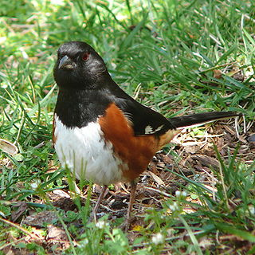
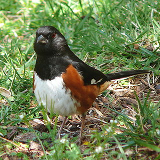

| Eastern Towhee | |
|---|---|
|  | |
| Male Eastern Towhee. | |
| Conservation status | |
| Binomial name | |
| Pipilo erythrophthalmus (Linnaeus, 1758) |
| Eastern Towhee | |
|---|---|
|  | |
| Male Eastern Towhee. | |
| Conservation status | |
| Binomial name | |
| Pipilo erythrophthalmus (Linnaeus, 1758) |
The Eastern Towhee, Pipilo erythrophthalmus, is a large New World sparrow. The taxonomy of the towhees has been under debate in recent decades, and formerly this bird and the Spotted Towhee were considered a single species, the Rufous-sided Towhee.
Adults have rufous sides, a white belly and a long dark tail with white edges. The eyes are red, white for birds in the southeast. Males have a dark head, upper body and tail; these parts are brown in the female.
Their breeding habitat is brushy areas across eastern North America. They nest either low in bushes or on the ground under shrubs. Northern birds migrate to the southern United States. There has been one record of this species as a vagrant to western Europe; a single bird in Great Britain in 1966.[1]
The call is Drink your teeeee; the word "towhee" imitates this call.

{kind=link}